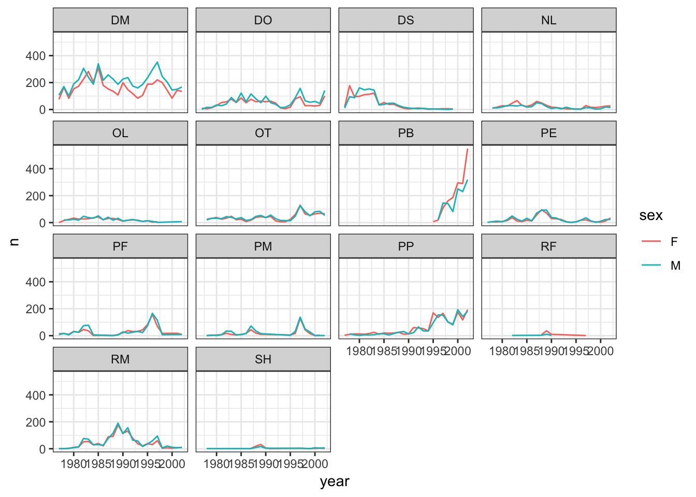

Learning objectives
- Get comfortable importing different kinds of data
- Get comfortable manipulating a new data set
- Get comforatble visualizing a new data set
Let’s see a workflow from start to finish. You’re going to go find a dataset online, get it into R, learn some things from it, and visualize it. Finally, we’ll save some of the results of our data manipulations and our figures so we can easily send them to our colleagues.
Close out of RStudio entirely, then open today’s project folder fresh. Create a new script file for this exercise and save it to the appropriate subfolder within your project folder.
We are studying the species and weight of animals caught in plots in our study area. The dataset is stored as a comma separated value (CSV) file. Each row holds information for a single animal, and the columns represent:
| Column | Description |
|---|---|
| record_id | Unique id for the observation |
| month | month of observation |
| day | day of observation |
| year | year of observation |
| plot_id | ID of a particular plot |
| species_id | 2-letter code |
| sex | sex of animal (“M”, “F”) |
| hindfoot_length | length of the hindfoot in mm |
| weight | weight of the animal in grams |
| genus | genus of animal |
| species | species of animal |
| taxa | e.g. Rodent, Reptile, Bird, Rabbit |
| plot_type | type of plot |
Remember libraries need to be loaded before you can use them in a new R session. Be sure to include all of the libraries you use in your script by using the library() function at the top of your code.
The data can be found on Figshare at this link. The file we want is called “combined.csv” and can be found as one of the icons labeled “dataset” near the top of the page. Get the combined.csv file using either of the 2 methods we’ve seen so far. If you are choosing a download option, be sure to put the file in the appropriate subfolder within your project folder.
For a third way to get data from a web source, check out the download.file() using ?download.file() or Google.
Load the data into R if your method from above didn’t do this already. Be sure to assign the data a variable name!
How would you inspect this? Write a few lines of code that will describe it (e.g., what kind of object is it? how many observations? how many variables? what are the column names? what does the head look like?)
Challenge
Using pipes, subset the
surveydata to include individuals collected before 1995 and retain only the columnsyear,sex, andweight.
Challenge
Create a new data frame from the
surveysdata that meets the following criteria: contains only thespecies_idcolumn and a new column calledhindfoot_halfcontaining values that are half thehindfoot_lengthvalues. In thishindfoot_halfcolumn, there are noNAs and all values are less than 30.Hint: think about how the commands should be ordered to produce this data frame!
Challenge
How many individuals were caught in each
plot_typesurveyed? (Hint: check out thetally()function.)Use
group_by()andsummarize()to find the mean, min, and max hindfoot length for each species (usingspecies_id).What was the heaviest animal measured in each year? Return the columns
year,genus,species_id, andweight.You saw above how to count the number of individuals of each
sexusing a combination ofgroup_by()andtally(). How could you get the same result usinggroup_by()andsummarize()? Hint: see?n.
In preparation for plotting these data, prepare a cleaned up version of the dataset that doesn’t include any missing data.
Let’s start by removing observations for which the species_id is missing. In this dataset, the missing species are represented by an empty string and not an NA. Let’s also remove observations for which weight and the hindfoot_length are missing. This dataset should also only contain observations of animals for which the sex has been determined:
Save the result to a new object called surveys_complete.
Because we are interested in plotting how species abundances have changed through time, we are also going to remove observations for rare species (i.e., that have been observed less than 50 times). We will do this in two steps: first we are going to create a dataset that counts how often each species has been observed, and filter out the rare species; then, we will extract only the observations for these more common species:
To make sure that everyone has the same dataset, check that surveys_complete has 30463 rows and 13 columns by typing dim(surveys_complete).
Save the surveys_complete object as a CSV file in a data_output folder. By default, write.csv() includes a column with row names (in our case the names are just the row numbers), so add the row.names = FALSE argument to the write.csv() function call so they are not included.
Explore the surveys_complete dataset further using ggplot2.
Challenge – visualize the distribution of variables
- Use a boxplot or a violin plot to visualize the distribution of the
weightvariable for each species.- Create a different boxplot to show the distribution of the
hindfoot_lengthvariable for each species.Boxplots are great for showing a lot of information about the spread of a variable, but some information from the raw data is lost.
- Add a point geometry to your boxplot to visualze the raw
hindfoot_lengthdataUnfortunately, adding the raw data makes our figure “overplotted”. There are too many points overlapping and information is lost this way, too.
- Make a new boxplot of
hindfoot_lengthfor each species, but this time plot a jittered version of the raw data as a geometry on top of your boxplot (Hint: If a geom_point() makes a point geometry, what do you expect will make a jitter geometry?)- Color your jittered datapoints on your boxplot according to the plot from which the observation was taken (plot_id).
Challenge – Publication-quality plot
The goal of this challenge will be to recreate the figure below, and then add some improvements to make it publication ready. The figure shows the yearly counts of each species through time by sex and species. Does our
surveys_completedataframe have the information that we need to make this figure?
- Create a new object called
yearly_sex_countsthat has the uses thesurveys_completedataframe to calculate the total number of individuals observed in each year of each sex of each species. Hint: Think about what subgroups you need to split your data into, what function you want to apply to those subgroups, and what variables in your new dataframe you will need when it is combined back together.Build your plot piece-by-piece, making sure you can get each new component to work before adding more complexity.
- For instance, start by building a plot that only sets up the x position and y position aesthetics. What data should be mapped to these visual features of the plot?
- Now add a geometry. Which one should you use to match the plot below?
- Color the geometry you just added by sex.
- Create subplots by species using faceting.
- Test out some of the different themes available and pick one that has more of a white background, which will be easier to read when printed.
- Save your plot to your figures subdirectory in your project folder

Bonus: Take a look at the
ggplot2cheatsheet pdf for some ideas on how to improve the plot (e.g., renaming the axes to something more informative, add a title, rotate axis labels so they’re readable).Bonus: Create a similar plot that shows the mean weight of individuals by year for each sex of each species and save it to your figures subdirectory.
Bonus: Generate a dynamic document using RMarkdown that incorporates both the data-manipulation required to create your final plot for this challenge as well as the plot itself.
Double bonus: Add to your dynamic document all of the data manipulation steps you needed to take going all the way back to the original “combined.csv” file. Just include the fewest steps required to go from the “combined.csv” file to the publication-quality plot.
This lesson is adapted from the Data Carpentry: R for Data Analysis and Visualization of Ecological Data Starting with Data materials, the Data Carpentry: R for Data Analysis and Visualization of Ecological Data Data Visualization with ggplot2 materials, and the Data Carpentry: R for Data Analysis and Visualization of Ecological Data Manipulating and Analyzing Data with dplyr materials.